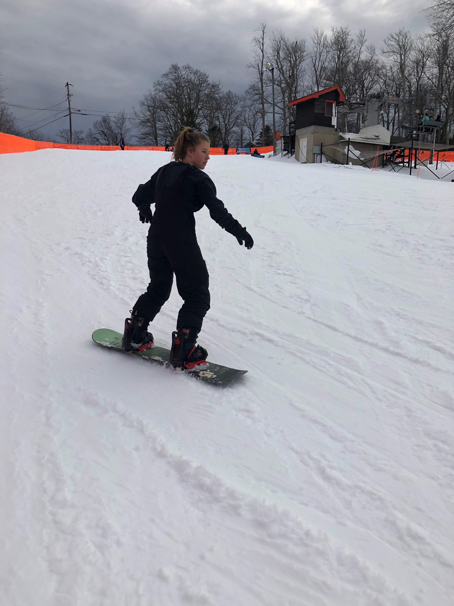

About Me
Learn more about my background, interests, and experience below! Scroll to the bottom to see my resume, or click here to download it.
 As a student at NC State University, I joined the Wolfpack as an engineer but have since found a better fit in statistics. Although I still admire and utilize the problem-solving engineering approach, statistics has aligned better with my passion to solve real-world problems through data analysis. The increasing presence of big data can either be a huge pain or a huge opportunity ...and I intend to help you transform the former into the latter!
As a student at NC State University, I joined the Wolfpack as an engineer but have since found a better fit in statistics. Although I still admire and utilize the problem-solving engineering approach, statistics has aligned better with my passion to solve real-world problems through data analysis. The increasing presence of big data can either be a huge pain or a huge opportunity ...and I intend to help you transform the former into the latter!
During my time at State, I've gained a solid statistical foundation that informs the lens through which I process and analyze data, supplemented by experience with statistical applications of coding languages, including Python, R, Java, and SAS.
Most recently, I was able to apply that knowledge through an internship with the Laboratory for Analytic Sciences (LAS), a partnership between the National Security Agency (NSA) and NC State. I assisted in both quantitative and qualitative data analysis; in the former category falls the collection, transformation, and regression of Pew opinion data and geospatial data, and in the latter is a literature review and poster analyzing trust in the analytic space. In addition to the real-world application of skills I'd acquired mostly in theoretical, clean applications, I was excited by the interdisciplinary nature of working at LAS, which necessitated collaboration and added layers of meaning, background, and application to our data analysis.
As LAS is an interdisciplinary endeavour, most of my co-workers hailed from disciplines other than data science, which provided an opportunity for me to hone the skill of teaching myself. Not surprisingly, this pays dividends in both the classroom and outside it, leading to self-taught ventures such as this very website.
 Since I had enjoyed tutoring my high school friends in their STEM classes, this affinity propelled me to become a math tutor in college and thus recognize my enthusiasm for teaching, which in my career has translated to a desire to help both data-literate and non-data-literate audiences understand data analysis and thus make data-informed decisions.
Since I had enjoyed tutoring my high school friends in their STEM classes, this affinity propelled me to become a math tutor in college and thus recognize my enthusiasm for teaching, which in my career has translated to a desire to help both data-literate and non-data-literate audiences understand data analysis and thus make data-informed decisions.
One of my favorite parts of NC State is its diversity of clubs and organizations, which have sparked different interests and immensely broadened my college experience.
Antioch has served as more than just an organization for me, but rather a family into which I was accepted with open arms. As a nervous freshman in need of a supportive community, encountering Antioch was transformative. It's now my delight to carry forward that legacy as I get to welcome new people into Antioch, which accepts them as they are while loving them enough to encourage growth.
My mother is a first-generation American whose parents are from Germany. As such, German culture and traditions (and a few words here and there) are integrated into my childhood, so learning German (and hopefully visiting Germany if covid-19 allows) is motivated by better understanding my family culture and especially my grandparents. Deutschklub at NC State has provided an experiental learning environment to supplement my classroom German education, along with Kaffeeklatsch (translation: coffee gossip) every week.
I was first introduced to shag and swing dance through The Raleigh Shag Club hosted at TJ's, and the result has been a love for swing dance that has infected my friends to the point where we've coordinated swing dance events together!
I also enjoy to run and road bike, two pastimes for which I recently discovered a love after covid-19 lockdown prevented gym access and increased a need for outside time.